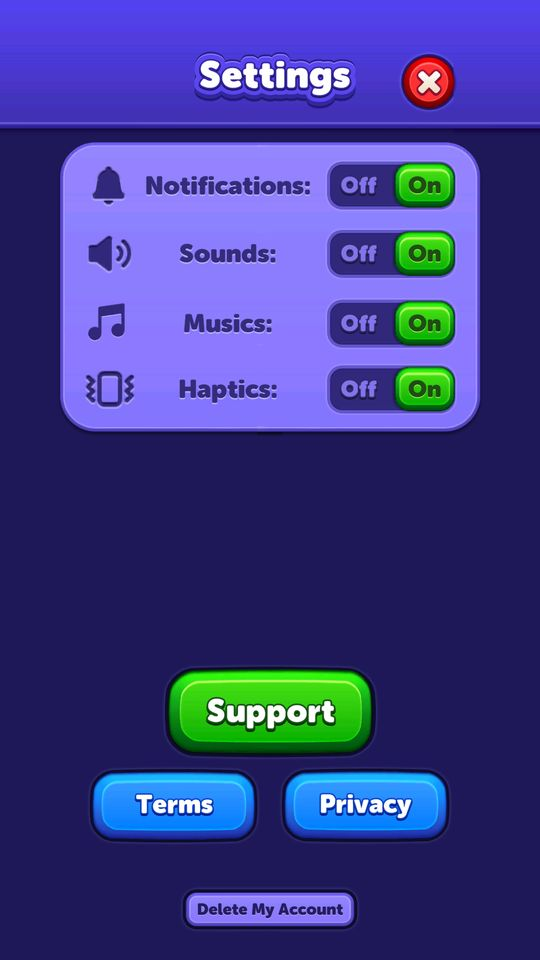
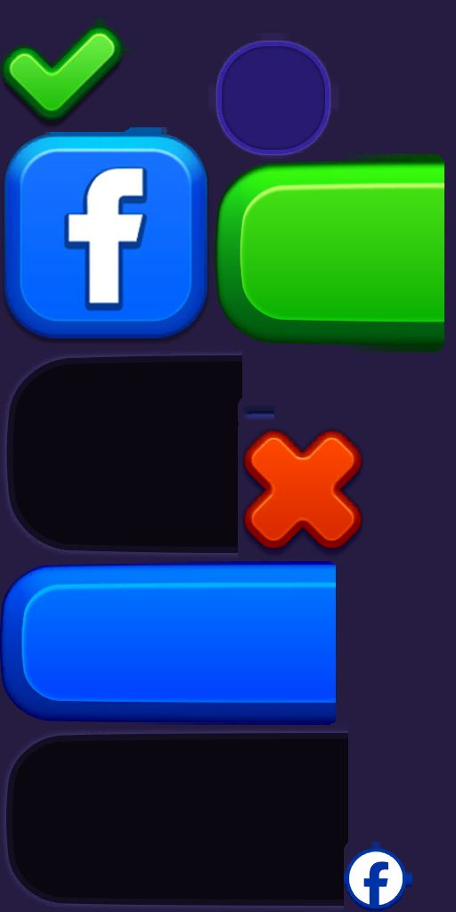

Đăng nhập Facebook / Apple
Hai cách liên kết tài khoản để giữ tiến độ khi đổi máy: Facebook và Apple Sign In. Cả hai đang bị tắt trên server.
Mô tả
- Hai cách liên kết tài khoản: Facebook và Apple Sign In. Live 28/10: Facebook tắt, Apple bật (đổi từ false sang true giữa 07/10 và 28/10); Settings trên Android không có mục đăng nhập.
Thiết kế chi tiết
Tóm tắt thiết kế
Live 28/10 28/10: isFacebookSignInEnabled = false, isAppleSignInEnabled = true. Apple đổi false → true giữa 07/10 và 28/10 (GDD cũ ghi cả hai tắt).
Playtest Settings trên Android không có mục đăng nhập; Facebook chỉ còn atlas trong APK. Không ai trên bảng xếp hạng có ảnh đại diện từ Facebook.
Code Phản hồi đăng nhập Apple dùng lại kiểu FbLoginResponse; tài khoản ẩn danh khôi phục bằng định danh máy (FetchDataFromRemoteAndDetectReInstall).
Luồng người chơi từng bước
- Settings không có nút đăng nhậpGiao diện PlaytestSettings 07/10; atlas Facebook trong APK.

Settings: không có mục đăng nhập 
Atlas Facebook (APK)


Bảng tổng hợp mọi tính năng đã làm chi tiết: BlockOut_ThietKeChiTiet.xlsx.
Còn thiếu / chưa xác minh
Mở khóa & điểm vào
rootLevelConfigModel.isFacebookSignInEnabled = false, isAppleSignInEnabled = true (28/10).
Điểm vào:
- Nút liên kết trong màn hình cài đặt hoặc hồ sơ
Cách hoạt động
- SyncService.SyncFacebookAsync(facebookId, facebookImageUrl, facebookName) và SyncAppleAsync(appleId) gửi định danh lên backend, nhận FbLoginResponse.
- Kết quả phản ánh qua FacebookLoginResult / AppleLoginResult (Success, Cancel, Fail) và hiển thị bằng FacebookLoginResultPopupKind / AppleLoginResultPopupKind — hai enum này có thêm giá trị Disconnect, tức có cả luồng huỷ liên kết.
- SocialProfilePhotoManager lo ảnh đại diện lấy từ mạng xã hội.
- APK có kèm SDK Facebook.Unity và AppleAuth.
Luồng chi tiết theo code
SyncService.SyncFacebookAsync(facebookId, facebookImageUrl, facebookName) và SyncAppleAsync(appleId) gửi định danh lên backend, nhận FbLoginResponse. Kết quả phản ánh qua FacebookLoginResult / AppleLoginResult (Success, Cancel, Fail) và hiển thị bằng FacebookLoginResultPopupKind / AppleLoginResultPopupKind — hai enum này có thêm giá trị Disconnect, tức có cả luồng huỷ liên kết. SocialProfilePhotoManager lo ảnh đại diện lấy từ mạng xã hội. APK có kèm SDK Facebook.Unity và AppleAuth.
Ảnh chụp màn hình (1)
1 ảnh tài nguyên trong APK. Bấm ảnh để phóng to; nhãn UC dẫn tới use case tương ứng.
Use case (3)
Bấm vào từng use case để mở. Mở/đóng tất cả
UC-01 Liên kết Facebook
Các bước- SDK Facebook trả về id, tên, url ảnh
- SyncService.SyncFacebookAsync(facebookId, facebookImageUrl, facebookName)
- Backend trả FbLoginResponse
- FacebookLoginResult = Success -> hiện popup Success
| Actor | Player |
|---|---|
| Trigger | Bấm nút Facebook |
| Điều kiện | isFacebookSignInEnabled = true |
| Kết quả | Tiến độ gắn với tài khoản Facebook |
| Quy tắc / số liệu | Đang tắt trên server — nút không hiện |
| Evidence | SyncService.SyncFacebookAsync; enum FacebookLoginResult; rootLevelConfigModel.isFacebookSignInEnabled |
UC-02 Liên kết Apple
Các bước- AppleAuth trả appleId
- SyncService.SyncAppleAsync(appleId)
- ApiResponse<FbLoginResponse> trả kết quả
| Actor | Player |
|---|---|
| Trigger | Bấm nút Apple |
| Điều kiện | isAppleSignInEnabled = true |
| Kết quả | Tiến độ gắn với Apple ID |
| Quy tắc / số liệu | Đang tắt trên server. Lưu ý phản hồi vẫn dùng kiểu FbLoginResponse — dùng lại cấu trúc của Facebook |
| Evidence | SyncService.SyncAppleAsync; enum AppleLoginResult; rootLevelConfigModel.isAppleSignInEnabled |
UC-03 Huỷ liên kết
Các bước- FacebookLoginResultPopupKind.Disconnect / AppleLoginResultPopupKind.Disconnect
- ProfileSpriteService.DeleteProfilePhoto()
| Actor | Player |
|---|---|
| Trigger | Bấm ngắt kết nối |
| Điều kiện | Đang liên kết |
| Kết quả | Tài khoản trở về dạng ẩn danh |
| Quy tắc / số liệu | - |
| Evidence | enum FacebookLoginResultPopupKind; enum AppleLoginResultPopupKind |
Backend / server
| Command | Chiều | Mục đích |
|---|---|---|
FbLoginResponse | server→client | kết quả liên kết, dùng chung cho cả Facebook và Apple |
Giao diện (UI)
| Element | Class | Mục đích |
|---|---|---|
| Ảnh đại diện mạng xã hội | Modules.Contexts.Home.UI.SocialProfilePhotoManager | hiện ảnh từ Facebook |
Chưa đọc được / ghi chú
- Facebook đang tắt nên không quan sát được luồng thật; không mục nào trên bảng xếp hạng có ảnh Facebook.
Tính năng liên quan
Hồ sơ người chơi Tài khoản người chơi Giao tiếp với backend và đồng bộ dữ liệu
Nguồn đã đọc
- PseudoC/.../Infrastructure/Social/*.c
- PseudoC/.../Application/ServerCommunication/Scripts/SyncService.c